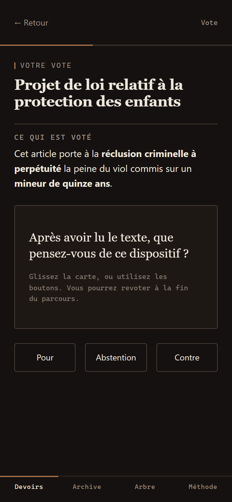
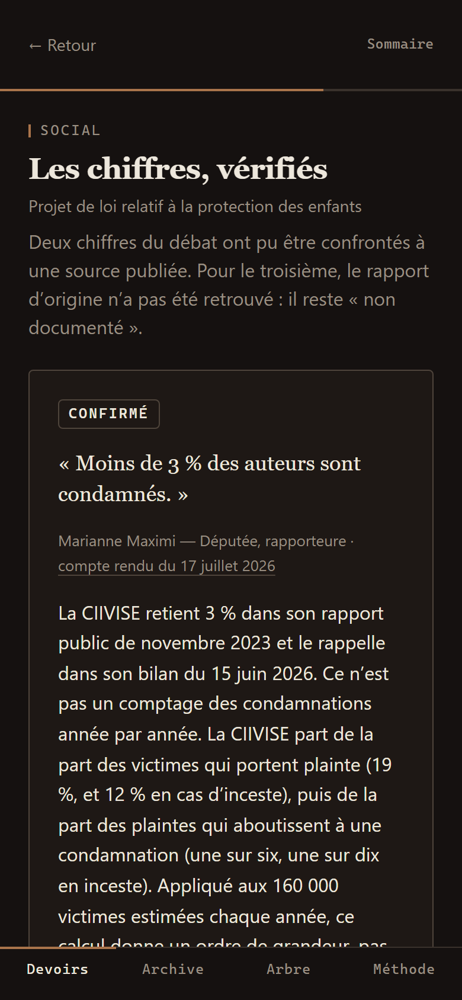
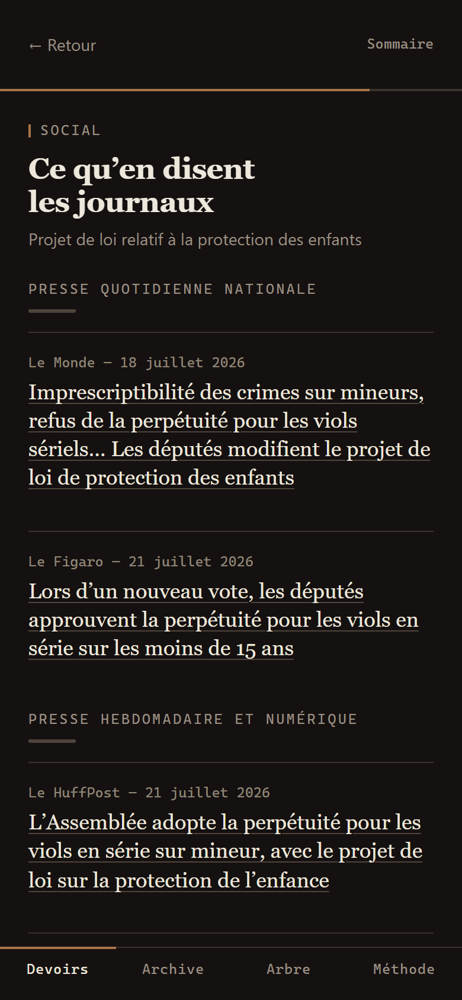
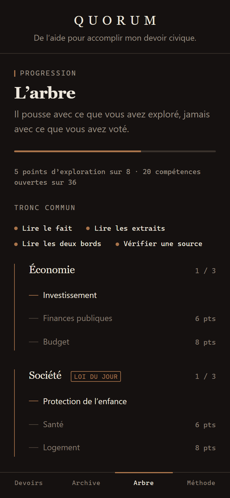
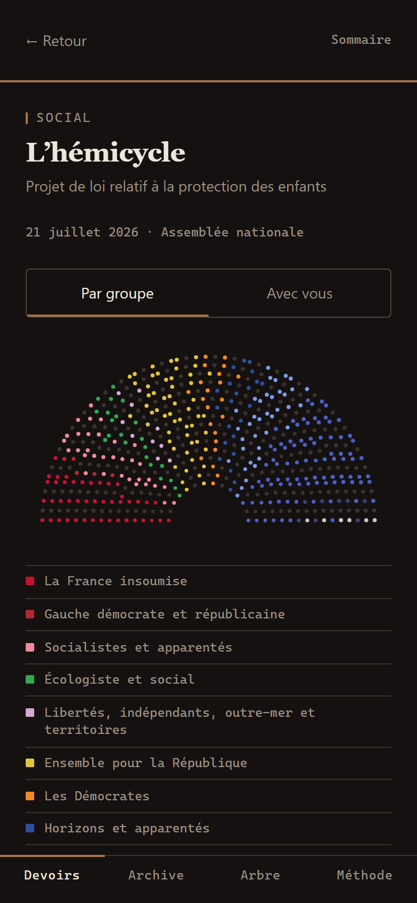

3 %
Moins de 3 % des auteurs sont condamnés.
Marianne Maximi, députée, rapporteure · compte rendu du 17 juillet 2026
confirmé
CIIVISE — rapport public, novembre 2023 · bilan du 15 juin 2026
Le document
Assemblée nationale
Première lecture
Texte adopté n° 338
Source : Assemblée nationale, dossier législatif. Licence Ouverte (Etalab).
Projet de loi relatif à la protection des enfants
Texte non définitivement adopté — commission mixte paritaire convoquée le 5 novembre 2026.
Neuf extraits · six citations · quatre titres de presse · trois chiffres vérifiés
Ce qui s’est dit. Ce qui s’est voté.
Le fait
13 étapes
27 mai – 5 novembre 2026
Source : dossier législatif, Assemblée nationale. Licence Ouverte (Etalab).
Le texte n’est pas définitif : une commission mixte paritaire est convoquée.
Article 11
Texte adopté n° 338
9 extraits
1 mention supprimée
Source : texte adopté n° 338, article 11. Licence Ouverte (Etalab).
Article 11 · alinéa 1
Le code pénal est ainsi modifié :
Article 11 · alinéa 2
1° (nouveau) L’article 222‑25 est ainsi modifié :
Article 11 · alinéa 3
« La peine est portée à la réclusion criminelle à perpétuité lorsque la victime est un mineur de quinze ans. »
Article 11 · alinéa 4
b) (Supprimé)
Article 11 · alinéa 5
2° Le premier alinéa de l’article 222‑26 est remplacé par quatre alinéas ainsi rédigés :
Article 11 · alinéa 6
« Le viol défini aux articles 222‑23, 222‑23‑1 et 222‑23‑2 est puni de la réclusion criminelle à perpétuité lorsqu’il est :
Article 11 · alinéa 7
« 1° Précédé, accompagné ou suivi de tortures ou d’actes de barbarie ;
Article 11 · alinéa 8
« 2° Commis sur un mineur de quinze ans et en concours avec un ou plusieurs autres viols commis sur d’autres victimes.
Article 11 · alinéa 9
« Les victimes sont informées, dès le début de la procédure, des dispositifs spécialisés de prise en charge du psycho‑traumatisme et des associations d’aide aux victimes. »
Une seule mention est marquée supprimée : b).
Votre vote
Premier vote
Stockage local
Clé quorum.v1
Source : application Quorum, écran de vote. Capture du 14 novembre 2026.
Ce qui est voté
Cet article porte à la réclusion criminelle à perpétuité la peine du viol commis sur un mineur de quinze ans.
Où va le vote
Il est écrit dans le navigateur, sous la clé quorum.v1. Aucun compte, aucun serveur.
Ce qui est envoyé
Rien. Le vote reste sur l’appareil et n’est pas publié.
Quand il arrive
Après la chronologie, le résumé et l’article entier : on vote après avoir lu.
Pour · Abstention · Contre

Le vote arrive après le texte et reste dans le navigateur.
Scrutins
n° 8429
n° 8428
21 juillet 2026
Source : Assemblée nationale, scrutins publics n° 8429 et n° 8428. Licence Ouverte (Etalab).
n° 8429 · Assemblée nationale
Objet : l’amendement n° 1 du Gouvernement de rétablissement de l’article 11 (supprimé) du projet de loi relatif à la protection des enfants (seconde délibération) (première lecture).
352 votants · 342 exprimés
1 non-votant
n° 8428 · Assemblée nationale
Objet : le sous-amendement n° 2 de Mme Perrine Goulet à l’amendement n° 1 du Gouvernement.
346 votants · 341 exprimés
1 non-votant
15 voix d’écart entre 178 et 163.
258 contre 84. 178 contre 163, le même jour.
Le débat
Six citations
21, 17 et 15 juillet 2026
Le contrôle refuse un fichier dont un bord pèse plus de 2,5 fois l’autre, sur les totaux de caractères.
Source : comptes rendus des séances des 15, 17 et 21 juillet 2026, Assemblée nationale. Licence Ouverte (Etalab).
Christophe Mongardien
21 juillet 2026
CRSANR5L17S2026E1N023
En effet, face à la gravité de ces faits, seule une peine de réclusion criminelle à perpétuité peut, d’une part, avoir un effet dissuasif et, d’autre part, prévenir toute récidive.
Gabriel Tomatis
17 juillet 2026
CRSANR5L17S2026E1N020
Lorsqu’il s’agit de pédocriminalité, le moindre risque de récidive est déjà un risque de trop.
Alexandra Martin
Alpes-Maritimes
15 juillet 2026
CRSANR5L17S2026E1N015
La protection de l’enfance passe aussi par la sévérité et la certitude de la sanction.
Gabrielle Cathala
17 juillet 2026
CRSANR5L17S2026E1N020
Ce qui dissuade les potentiels auteurs de passer à l’acte, ce n’est pas la lourdeur de la peine, mais la certitude d’être pris et de faire l’objet de poursuites.
Mathilde Panot
21 juillet 2026
CRSANR5L17S2026E1N023
La perpétuité, comme la peine de mort, fait peser une telle responsabilité sur l’enfant qu’elle le silencie encore davantage.
Arnaud Bonnet
17 juillet 2026
CRSANR5L17S2026E1N019
De notre côté, nous craignons que la perpétuité puisse avoir pour effet de dissuader le dépôt de plainte. Les plaintes sont déjà peu nombreuses lorsque les faits ont été commis dans le cadre familial, et ce n’est pas un hasard, car porter plainte à l’encontre d’une personne de sa famille est une cause de désaffiliation. Si l’auteur des faits encourt la perpétuité, nous avons peur que les victimes soient encore plus dissuadées de porter plainte.
Chaque phrase est recopiée ; une seule erreur refuse le fichier.
Vérification
3 chiffres
CIIVISE 2023
et 15 juin 2026
Le verdict ne dit jamais si la loi est bonne : il dit seulement ce que la source établit.
Source : data/lois/protection-enfants.json, verifications.
3 %
Moins de 3 % des auteurs sont condamnés.
Marianne Maximi, députée, rapporteure · compte rendu du 17 juillet 2026
confirmé
CIIVISE — rapport public, novembre 2023 · bilan du 15 juin 2026
1 %
Moins de 1 % des agresseurs incestueux sont condamnés.
Mathilde Panot, députée · compte rendu du 21 juillet 2026
confirmé
CIIVISE — rapport public, novembre 2023 · bilan du 15 juin 2026
70 %
Dans 70 % des affaires de viol, aucun acte d’enquête n’est réalisé.
Gabrielle Cathala, députée · compte rendu du 17 juillet 2026
non documenté
Le rapport inter-inspections de juillet 2022 n’a pas été retrouvé sur un site officiel.

Un chiffre sans source reste non documenté.
La presse
4 titres
2 types de publication
18 et 21 juillet 2026
Source : data/lois/protection-enfants.json, presse. Médias de data/ref/medias.json.
Imprescriptibilité des crimes sur mineurs, refus de la perpétuité pour les viols sériels… Les députés modifient le projet de loi de protection des enfants
Lors d’un nouveau vote, les députés approuvent la perpétuité pour les viols en série sur les moins de 15 ans
L’Assemblée adopte la perpétuité pour les viols en série sur mineur, avec le projet de loi sur la protection de l’enfance
Pourquoi la gauche a refusé de voter la perpétuité pour les viols en série sur mineur
Titres repris tels quels, avec leur date de publication et leur lien. Les colonnes sont classées par type de publication, jamais par bord politique. Aucun commentaire.

Les colonnes sont classées par type de publication, pas par bord.
Le parcours
8 actions
8 points au maximum
Source : data/ref/arbre.json, actions et règle des points.
Un nœud s’ouvre avec des points d’exploration. Aucun point ne vient du contenu d’un vote : voter rapporte le même point quel que soit le choix, et changer d’avis n’en rapporte aucun.
Huit actions, huit points. Le changement d’avis n’ajoute rien.

Changer d’avis ne rapporte rien ; les points ne récompensent que le parcours.
La carte
577 sièges
353 présents
224 non occupés
Fichier publié après gate 5.
Source : Assemblée nationale, scrutin public n° 8429. Licence Ouverte (Etalab).

Les absents restent des absents.
1 / 10